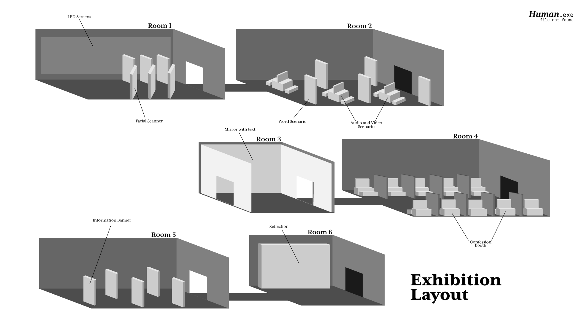
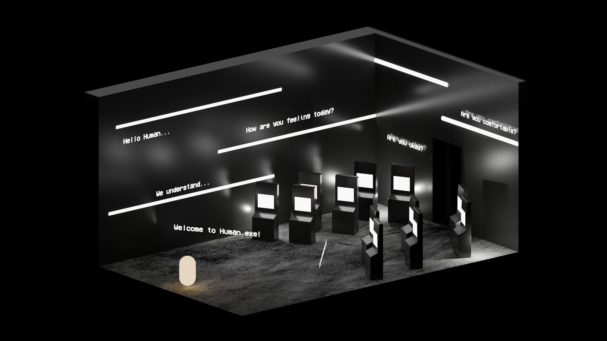
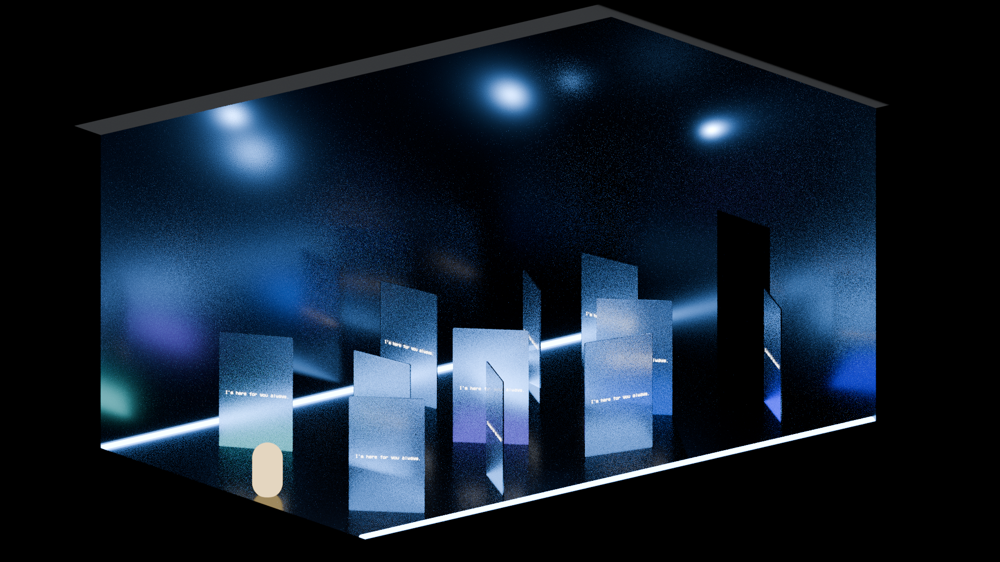
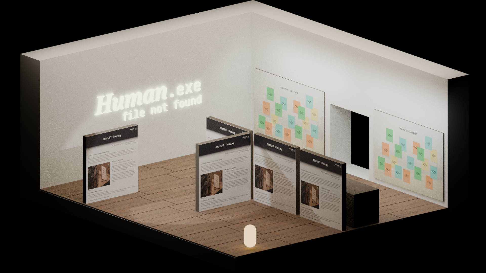
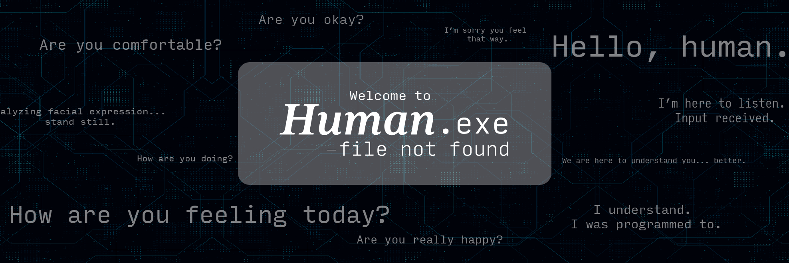

CRITICAL AI / EXPERIENCE DESIGN
Can technology really understand how we feel?
PROJECT OVERVIEW
The limitations of AI in replicating human emotion.
TYPE: Interactive Exhibition
FOCUS: Emotion AI + Ethics
ROLE: Concept / Experience Design
OUTCOME: Exhibition Journey + Video Showcase
AI can recognise emotion.
But can it understand it?
Human Error 404 explores whether AI should be trusted with decisions that require empathy, moral reasoning and emotional understanding.
EXHIBITION BREAKDOWN
The visitor journey
IMAGE MOCKUP
Overview
The exhibition is designed as a linear journey through five interconnected spaces, each exploring a different limitation of AI in understanding human emotions. Visitors begin with an introduction to Emotion AI before progressing through a series of interactive experiences that compare human empathy and machine logic. The journey culminates in a reflection space, encouraging visitors to consider what is lost when emotional understanding is reduced to data and algorithms.


ROOM MOCKUP
01. Introduction
The introduction room serves as the entry point to the exhibition, presenting visitors with the capabilities of Emotion AI and the promise of emotionally intelligent technology. By immersing visitors in a highly technological environment, the space encourages curiosity while introducing the central question that guides the experience: can AI truly understand human emotions, or merely interpret them?

ROOM MOCKUP
02. Trolley Problem
Visitors are placed inside a moral dilemma, questioning whether AI should be allowed to make choices that carry human weight.

ROOM MOCKUP
03. Empty Word Loop
The Empty Word Loop challenges the idea that emotional support can be automated. By repeatedly presenting scripted words of comfort, the experience highlights how AI can simulate empathy without truly feeling or understanding human emotions. Visitors are left to question whether reassurance has meaning when there is no genuine human connection behind it.

ROOM MOCKUP
04. Confession Booth
A warm, calming space gives visitors a false sense of comfort while questioning whether AI is understanding emotion or simply simulating it.

ROOM MOCKUP
05. Reflection
The final space asks visitors to reflect on what being human really means, and what we give up when we turn to AI.
EXHIBITION VIDEO
Concept Showcase
VISUAL DEVELOPMENT
Branding, mockups and assets
